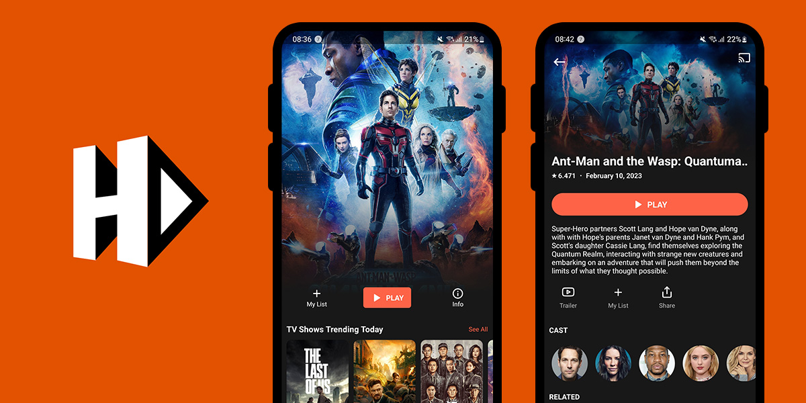

HDO Box: What Is It? How to Download It to Your Device?

Are you tempted to check out HDO Box? You have heard about the site but have no clue how good it is or how to use it? Is it already the best free movie streaming site out there? In this blog, we will list down as many headings as possible to help you get started watching free movies and TV shows with as little hassle as possible.
What Is HDO Box?
HDO Box is a streaming app that offers regular updates to provide bug-free content and a big catalog of HD movies and TV shows for its users like action, drama, horror, comedy, and romance. You can make a list of HDO Box movies you want to watch, and the app also gives you a brief summary of each title, including important details like the IMDB rating, cast, and year of release. If you are looking for a streaming app that's easy to navigate and has lots of options, HDO Box is a great choice!
HDO Box Features
After downloading HDO Box app, you can enjoy a variety of features, such as:
-
Subtitles support: HDO Box supports subtitles for a better viewing experience.
-
Fast loading: The app loads quickly, ensuring minimal wait time for users.
-
Responsive design: HDO Box has a responsive design that ensures it works well on various devices, including mobile phones.
-
Technical support: The app comes with great technical support to help users with any issues they may encounter.
-
Wide range of content: HDO Box offers a vast selection of movies and TV shows from different genres.
-
One-click to play: The app is easy to use, and users can play movies and TV shows with just one click.
-
Nearby theater feature: HDO Box has a nearby theater feature that shows a list of nearby theaters based on the user's location. Users can filter the list by distance and get directions to their preferred theater.
-
Personalized content: The app allows users to find movies and TV shows based on their preferences. HDO Box provides various categories and well-prepared lists of movies and shows for users to choose from.
-
Third-party app: HDO Box is a third-party app that is not available on the Amazon Store or Play Store. Users can sideload it using an app called Downloader.
How To Download HDO Box App?
Depending on the device you're using, you can download HDO Box app from either the App Store or the Google Play Store. For PC, you can visit the official HDO Box website and follow the instructions provided to download and install the app. Here are the step-by-step instructions on to download HDO Box:
Download HDO Box For iOS Devices:
-
Open the App Store on your device.
-
Type "HDO Box" in the search bar.
-
Choose the HDO Box app that you want to download.
-
Click on the "Install" or "Add" button to start the download process.
-
Wait for the app to download and install on your device.
Download HDO Box For PC:
-
Visit the official website of HDO Box at hdo-box.com
-
Search for "Download HDO Box for PC" and choose the appropriate operating system (Windows, Mac, or Linux).
-
Follow the instruction steps to download and install the app. You can choose from four different methods, including using an Android emulator, using a virtual machine, using a remote desktop connection, or using a third-party app installer.
Download HDO Box For Android Devices:
-
Go to the Google Play Store.
-
Type "HDO Box" in the search bar.
-
Choose the HDO Box app from the search results.
-
Click "Install" to start the download and installation process.
Download HDO Box APK on Firestick:
-
First, go to the Firestick settings and navigate to "Device" and then "Developer Options". Turn on the "Unknown Sources" option. This allows you to install apps from third-party sources.
-
Install the Downloader app on your Firestick device.
-
Open the Downloader app and enter the URL to download the HDO Box APK (which can typically be found on the official HDO Box website or a reliable third-party source).
-
Select "Install" to begin the installation process.
-
Open the HDO Box app from your Firestick device's home screen.
How To Watch Movies On HDO Box?
After you have completed downloading and installing the app, search for your favorite movie or show and start streaming. Follow these steps to enjoy your video of choice on HDO Box:
-
Type the title of interest in the search bar.
-
Click on the movie or show you want to watch, and it will start playing.
-
If you're using HDO Box on FireStick, it is recommended to use a VPN like ExpressVPN to protect your online privacy and security. ExpressVPN is easy to download and install on FireStick, and it provides fast and reliable VPN connections.
-
Turn on "Apps from Unknown Sources." This will allow you to install third-party apps on your Firestick.
What Happened To HDO Box?
There could be various reasons why HDO Box is not working. Here are some common issues reported by users:
-
Technical issues: Users have reported experiencing technical problems with HDO Box, such as the app not working, photos or videos not loading, audio not working, and login/account screen issues. These issues may be due to bugs or glitches within the app.
-
Casting issues: Some users have reported issues with casting movies or series to Nvidia Shield. They have mentioned that the app disconnects when they try to cast the content. It's unclear what causes this issue, but it could be related to the casting device or network connectivity.
-
Server issues: Some users have suggested that the HDO Box servers may be down, causing the app to stop working.
If you are having trouble with the HDO Box app, there are a few steps you can take to try and resolve the issue. First, you can try troubleshooting the app as per the steps recommended by the app or device manufacturer. This may involve clearing the cache or updating the latest version. If these steps do not work, you can also reach out to HDO Box support for assistance.
Is HDO Box Safe?
Like any other app that involves accessing copyrighted content, you might get into some legal trouble with HDO Box. According to copyright lawyers, it is legally safe to watch movies online on HDO Box. However, downloading and sharing the pirated content is another story. For your utmost safety, it is important to exercise caution when using HDO Box and to consider alternative options if you have concerns about its safety.
What Is The Best HDO Box Alternative?
HDO Box is a great free movie streaming site, however, as some users have reported, sometimes, the app might not display any links for the search. If you fail to find the title of interest on the site or simply are looking for other alternatives, give the successor to CineHub app, OnStream, a look.
OnStream offers premium features that you normally have to pay for on paid services at no cost. The site is completely free with no hidden fees, ads, or popups, and it also provides multi-subtitles, which allows you to select the language that suits you best. OnStream also boasts an impressive selection of high-quality movies that will leave you spoilt for choice. From the latest blockbusters to timeless classics, we have something for every movie buff.
Additionally, OnStream stands out with its ability to download your preferred movies and shows for offline viewing in case Internet connection is not available. It also has a custom favorites list, where you can keep track of your favorite movies and shows and share them with others. OnStream is also one of the quickest to release new content with daily updates.
Since both apps offer similar features, deciding which one to choose depends on personal preferences. It's a good idea to select one app as your primary choice and keep the other as a backup in case it's no longer available or doesn't have your movie of interest.
We hope this blog has answered all your questions about HDO Box. If you have any further inquiries, please feel free to leave a comment. Save your time for what matters most, like watching your favorite movies, and leave the task of searching for free movie sites to us.